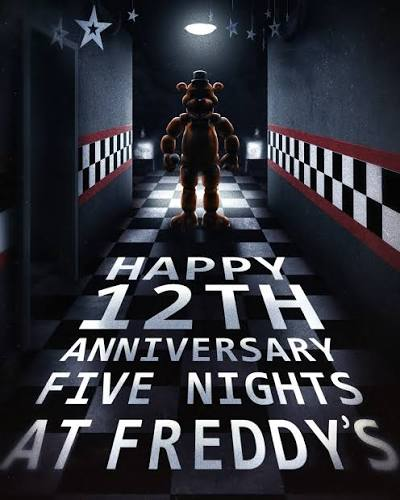
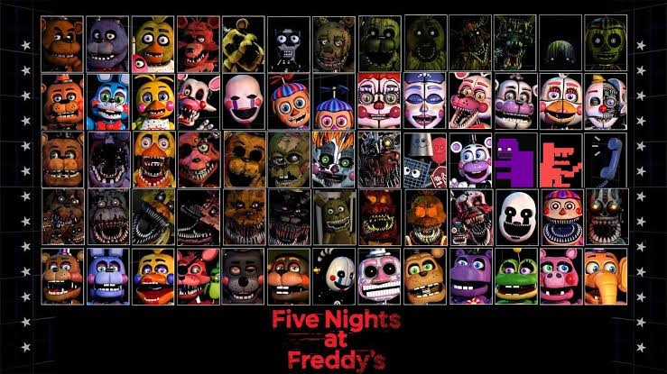
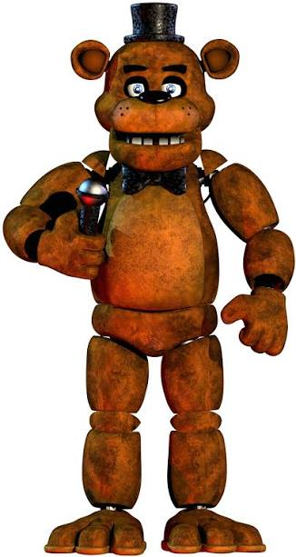

Fan anniversary splash
12yrs of FNAF
The lights are low, the stage is waiting, and the celebration is already moving.


Fan anniversary splash
The lights are low, the stage is waiting, and the celebration is already moving.


